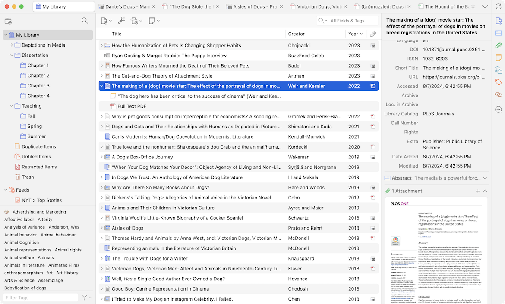

Ngozi Harrison
ngozih@g.ucla.edu
Fall 2026
Cluster 10A Section 1G and 1H
4th-year PhD Candicate in Information Studies
From Oakland, CA
Areas of Interest
Information Science, Critical Data Studies, Statistics, Machine Learning, Philosophy of Technology
Research Topic
My research is focused on a critical investigation of data, statistics and machine learning through the lens of Du Bois' philosophy of science
slayr - Half Blood (Bloodluxe)
Brent Faiyez - Icon
SURF GANG, MIKE, Earl Sweatshirt - POMPEII // UTILITY
lucy bedroque - c
Kelela - new avatar
Lerado Khalil - BLACK FLAG
underscores - U
Cold Gawd - Glory2 EP
Don Tolliver - E85
Deftones - private music
Loathe - A Stranger to You
Samba Jean-Baptiste - +3
Larry June - Who Coppin
Interdisciplinary work integrates perspectives, insights, questions, and methodological approaches from multiple disciplines for the purpose of understanding complex phenomenon
“In sum, we are starting to witness the development of what Dalton and Thatcher (2014) call critical data studies -- research and thinking that applies critical social theory to data to explore the ways in which they are never simply neutral, objective, independent, raw representations of the world, but are situated, contingent, relational, contextual, and do active work in the world.” (Kitchin and Lauriault, 2014, p. 5)
“A critical approach to Big Data investigates meta-theoretical modes of conversation and styles of scientific thinking (Hacking, 1994) that pervade data science—it does not contribute to knowledge in the positivistic sense but instead analyzes the ground upon which positivistic Big Data science stands.” (Iliadis and Russo, 2016, p. 2)
Not a data science class but a critical data studies class
Please open the discussion course site on Bruin Learn and fill out the course questionnaire
Office hours TBD (currently scheduled for )
Email ngozih@g.ucla.edu
Section Policies
All additional resources and links will be posted on the Bruin Learn TA site
Any questions on the syllabus?
Ask questions
Write down words, concepts, readings, and people you don't know to look up later
Develop a system for notetaking and assignment management
Read before lecture
Use the readings, lectures, and discussions to inspire and challenge your thinking
Don't be afraid to try out ideas and experiment
Open the bruin learn course site and read the two handouts posted under week 1
Zotero is a must for your academic career. It is a tool for storing your sources and readings that makes it easier when it's time to write formatted citations and papers.

Kitchin, R., & Lauriault, T. (2014). Towards Critical Data Studies: Charting and Unpacking Data Assemblages and Their Work (SSRN Scholarly Paper No. 2474112). Social Science Research Network. https://papers.ssrn.com/abstract=2474112
Iliadis, A., & Russo, F. (2016). Critical data studies: An introduction. Big Data & Society, 3(2), 2053951716674238. https://doi.org/10.1177/2053951716674238